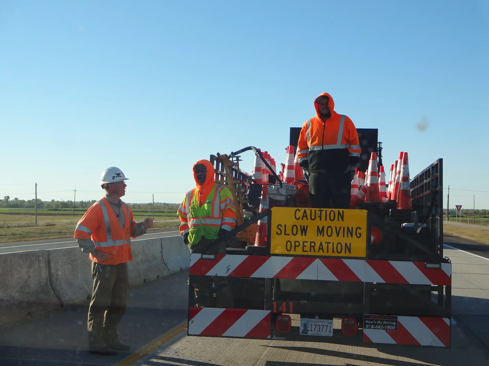

Marc Hader’s Priorities

The role of County Commissioner is a full-time job!
Marc served Canadian County full-time as Commissioner. He plans to do so again. Sadly, many folks think County Commissioner is a part-time role in which one can have other jobs, businesses, or distractions and just devote time in the cracks. But Canadian County is the 4th most populous and has been the fastest growing in Oklahoma for more than a decade. You deserve a public servant that prioritizes your business and gives you full-time effort.

Protecting Citizens’ Rights
Marc is a strong defender of Constitutional freedoms and has worked tirelessly at the state Capitol and through grassroots efforts to preserve our rights. He helped pass legislation allowing County Elected Officials to carry in the Courthouse/Administration Building and supported a bill letting Boards of County Commissioners authorize county employees to conceal carry—except in courtrooms and the jail.
Beyond these legislative victories, Marc has championed countless personal liberty bills and stood firm during COVID, resisting pressures to require vaccinations to protect citizens’ and employees’ bodily autonomy.
Return to requesting Special Audits by the State Auditor & Inspector
Marc Hader was DOGE before DOGE was cool! Marc has been a part of two of the only three counties in Oklahoma history to seek Performance or other Special Audits. Marc was a part of Oklahoma County Commissioner Stan Inman’s team which sought to audit the operations of former Sheriff John Wetsel. And, Marc began to systematically audit Canadian County government, having performance audits completed of the Commissioner’s and Sheriff’s operations. Marc plans to continue such audits if returned to office. The current administration has not carried on this transparent and accountable practice. Oklahoma statute requires a certain percentage of the county’s budget to be available for auditing purposes. There is no reason this practice should have been abandoned.

Return to holding Board meetings in cities when citizens are available
When Marc was first elected, he implemented an idea to hold occasional Commission Board meetings in the various cities and towns, in the evening, at times when the citizens could attend and see their business being done. This practice ceased under the current administration took office. Most citizens cannot make their way to El Reno, at 9:00 AM, on a Monday morning to see their business being handled. They have to be at their own jobs.

Represent Canadian County citizens interests wherever needed
Marc has relationships with cities, chambers of commerce, schools, the Association of County Commissioners, at the State Capitol, our Congressional delegation, and even national organizations focused on our traditional values and sound public policy.

Continued modernization
Marc lead the way to create Canadian County governments first HR Department in its history, as well as updating and modernizing the County’s website, and introducing Kronos software to modernize and create accuracy and efficiency in managing workplace responsibilities. Prior to this, employees time was still being kept on paper, which was very time-consuming and was subject to errors. Marc plans to use this to even greater efficiencies in the future. Marc wants to finish the job he started in the past to record and/or broadcast the Commission meetings, and other board meetings. He also wants to archive these meetings for citizens who want and need to know how their business is being conducted. Marc has long been a Champion of transparency, accountability and access for and to the public. He wants to restore trust which has been lost over time

First-Class Infrastructure
Marc understands that roads, bridges, and infrastructure are vital to daily life and commerce. With experience at ODOT, multiple civil engineering firms, a municipality, and as Commissioner, he has the expertise to get projects done efficiently. Marc has successfully petitioned the legislature for increased funding for county roads and bridges, including a special fund for communities impacted by energy exploration. During his service, he built or paved over 90 miles of roads, constructed numerous bridges, and maintained rural gravel and shale roads while ensuring proper equipment was used. Marc continues to collaborate with cities, neighboring counties, tribal leaders, and engineers to deliver safe, high-quality infrastructure for all.

Keeping the Reins on your Tax Burden
Hader lead the effort of the Canadian County Commission to put a question on the ballot to reduce your sales tax burden. This may be the only time in Oklahoma history that County Commissioners sought to lower the tax burden on their citizens. Hader didn’t just talk the talk, he walked the walk. This is an ethic he continues to carry. There is the possibility of a state question being on the ballot this year that will let the citizens vote to end property taxes on their homestead. Marc is ready to handle the challenge if this comes to fruition, and will be happy for those who will truly be able to fully own their homes and not live in fear that the government will take them.